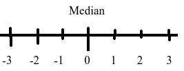
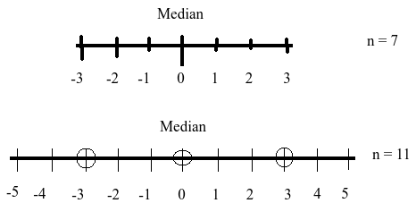

PCC | Mahmud | Statistics| statmania.info
Who is better: Sayem or Siyam?
| Exam | Sayem | Siyam |
|---|---|---|
| Exam-1 | \(\frac{63}{90} = 70 \%\) | \(\frac{8}{10}=80 \%\) |
| Exam-2 | \(\frac{4}{10} = 40 \%\) | \(\frac{45}{90} = 50 \%\) |
Who is better: Sayem or Siyam?
| Exam | Sayem | Siyam |
|---|---|---|
| Exam-1 | \(\frac{63}{90} = 70 \%\) | \(\frac{8}{10}=80 \%\) |
| Exam-2 | \(\frac{4}{10} = 40 \%\) | \(\frac{45}{90} = 50 \%\) |
| Combined | \(\frac{67}{100} = 67 \%\) | \(\frac{53}{100} = 53 \%\) |
| Year | Jeter | Justice |
|---|---|---|
| 1995 | \(\frac{12}{48} = 0.25\) | \(\frac{104}{411}=0.253\) |
| 1996 | \(\frac{183}{582} = 0.314\) | \(\frac{45}{140} = 0.270\) |
| Year | Jeter | Justice |
|---|---|---|
| 1995 | \(\frac{12}{48} = 0.25\) | \(\frac{104}{411}=0.253\) |
| 1996 | \(\frac{183}{582} = 0.314\) | \(\frac{45}{140} = 0.321\) |
| Combined | \(\frac{195}{630} = 0.310\) | \(\frac{149}{551} = 0.270\) |
| Stone | Treatment A (Open Surgery) |
Treatment B (Puncture) |
|---|---|---|
| Small | Group 1 \(\frac{81}{87} = 93 \%\) |
Group 2 \(\frac{234}{270}=87\%\) |
| Large | Group 3 \(\frac{192}{263} = 73\%\) |
Group 4 \(\frac{55}{80} = 69 \%\) |
| Stone | Treatment A (Open Surgery) |
Treatment B (Puncture) |
|---|---|---|
| Small | Group 1 \(\frac{81}{87} = 93 \%\) |
Group 2 \(\frac{234}{270}=87\%\) |
| Large | Group 3 \(\frac{192}{263} = 73\%\) |
Group 4 \(\frac{55}{80} = 69 \%\) |
| Both | \(\frac{273}{350} = 78\%\) | \(\frac{289}{350} = 83 \%\) |
Standard deviation
Quartile Deviation
Mean Deviation
Range
Coefficient of Range
Coefficient of Quartile Deviation
Coefficient of Mean Deviation
Coefficient of Variatio
\(\sigma ^2 = \sum_{i=1}^n \frac{(x_i-\bar x)^2}{n} = \sum \frac{x_i^2}{n}-(\frac{\sum x_i}{n})^2\)
\(\quad\) = Mean of square - square of mean
Standard Deviation (\(\sigma\))
Positive square root of \(\sigma^2\)
| \(x\) | \(x^2\) |
|---|---|
| 12 | 144 |
| 11 | 121 |
| 3 | 9 |
| \(\sum x = 26\) | \(\sum x^2 = 274\) |
\(\therefore\) \(\sigma^2 = \frac{274}{3}-(\frac{26}{3})^2 =?\)
## [1] 24.33333Randomly generated dataset
## [1] 14 13 15 11 5 15 7 12 11 10 6 5 3Variance is
## [1] 16.44583Standard deviation is
## [1] 4.055346Say we have values, \(x_1, x_2, \cdot \cdot \cdot , x_n\)
Let \(u_i=\frac{x_i-a}{c}\)
Then what should be the variance of \(u_i\)?
Recall Median?
\(Me = \frac{n+1}{2}th \space term\)
\(Me = \frac{\frac{n}{2}th \space term + \frac{n+1}{2}th \space term}{2}\)
5, 9, 4, 3, 8, 11


\(Me = \frac{n+1}{2}th \space term\)
\(Q_1 = \frac{n+1}{4}th \space term\)
\(Q_2=?\)
For odd n, \(Q_i = \frac{i(n+1)}{4}th \space\)
Nothing but the generalized formula of median.
Guess how?
## [1] 8 9 13 5 26 22 27## [1] 17 21 23 3 13 4 26 6The data is divided into ten parts.
\(D_i=?\)
Percentile \(P_i=?\)
## [1] 3 4 11 13 15 21 28 29 31 37 41 49 50 57 58 64 66 72 73Find
\(Q_1, Q_2, Q_3\)
\(D_2, D_{50}, D_{78}\)
Median
Quartile Deviation (QD) = \(\frac{Q_3-Q_1}{2}\)
Cooefficient of Range (CR) = \(\frac{R}{X_H+X_L}\)
Consider two colleges’s results
\(CV = \frac{\sigma}{\bar x} \times 100\)
\(\sigma _{vnc}=0.5, \bar x_{vnc}=4.8\) \(\sigma _{ud}=0.1, \bar x_{vnc}=4.7\)
It’s variance, rather than average, which tells us how unpredictable something is.
## [1] 2 14 15 17 21 22 29 30 32 36 37 40 46 48 52 59 61 66 71Calculate and Interpret
(hint: To find easily, use \(\sigma_x^2\)=mean of square - square of mean)